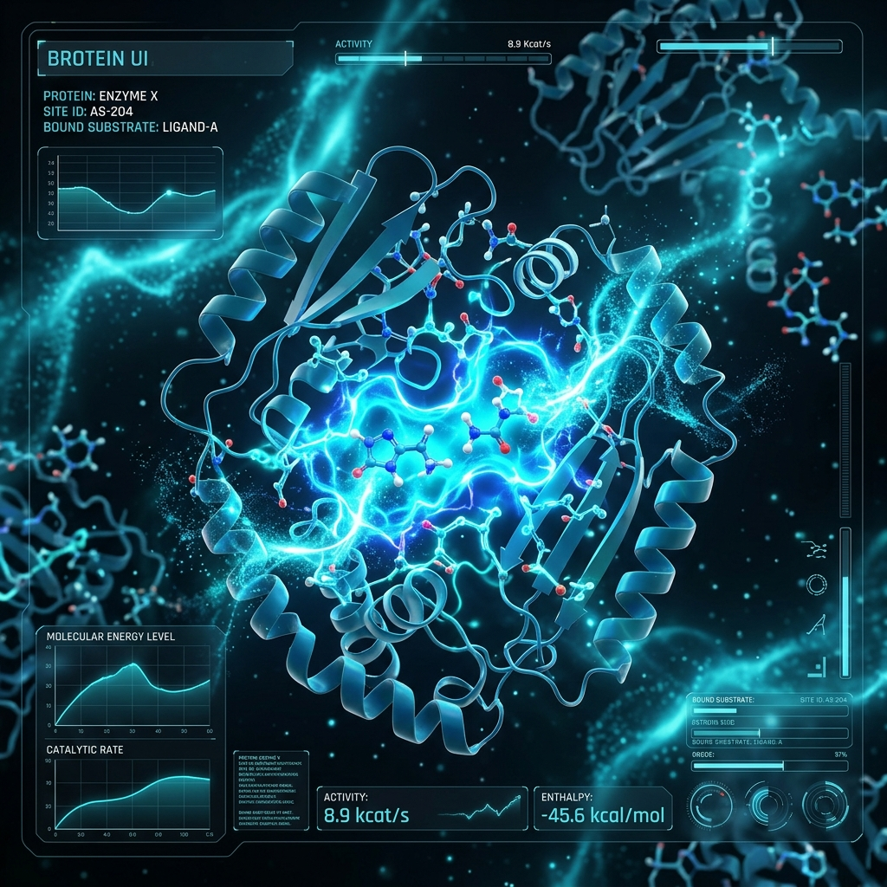
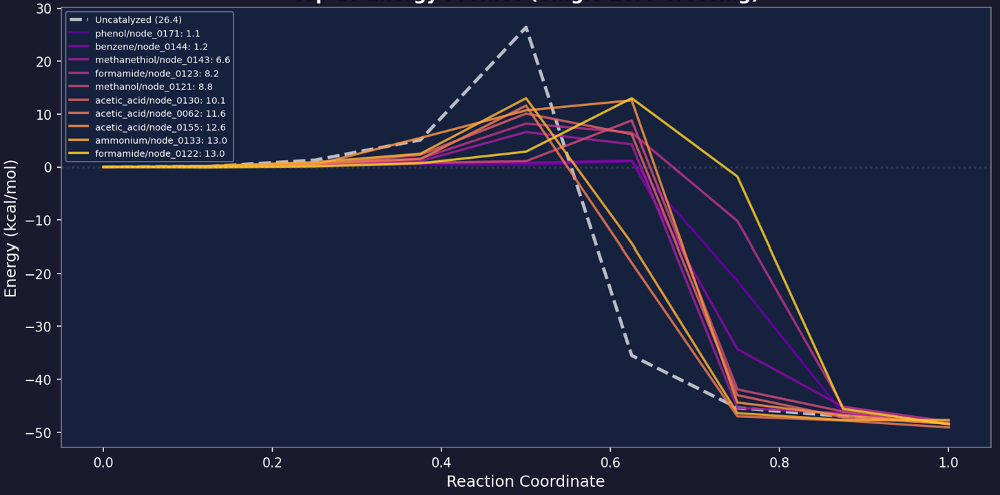
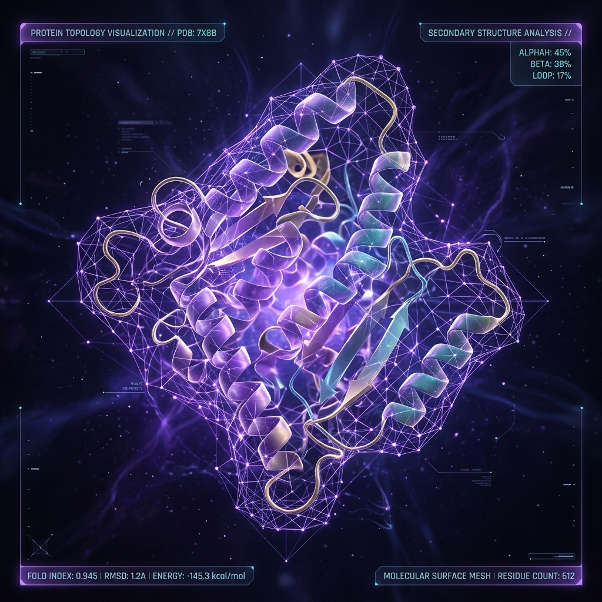
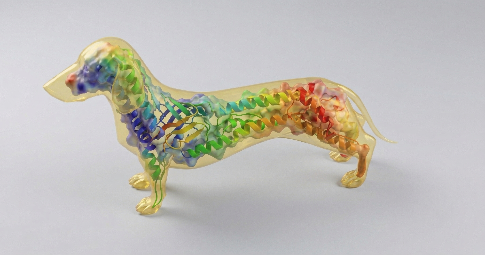
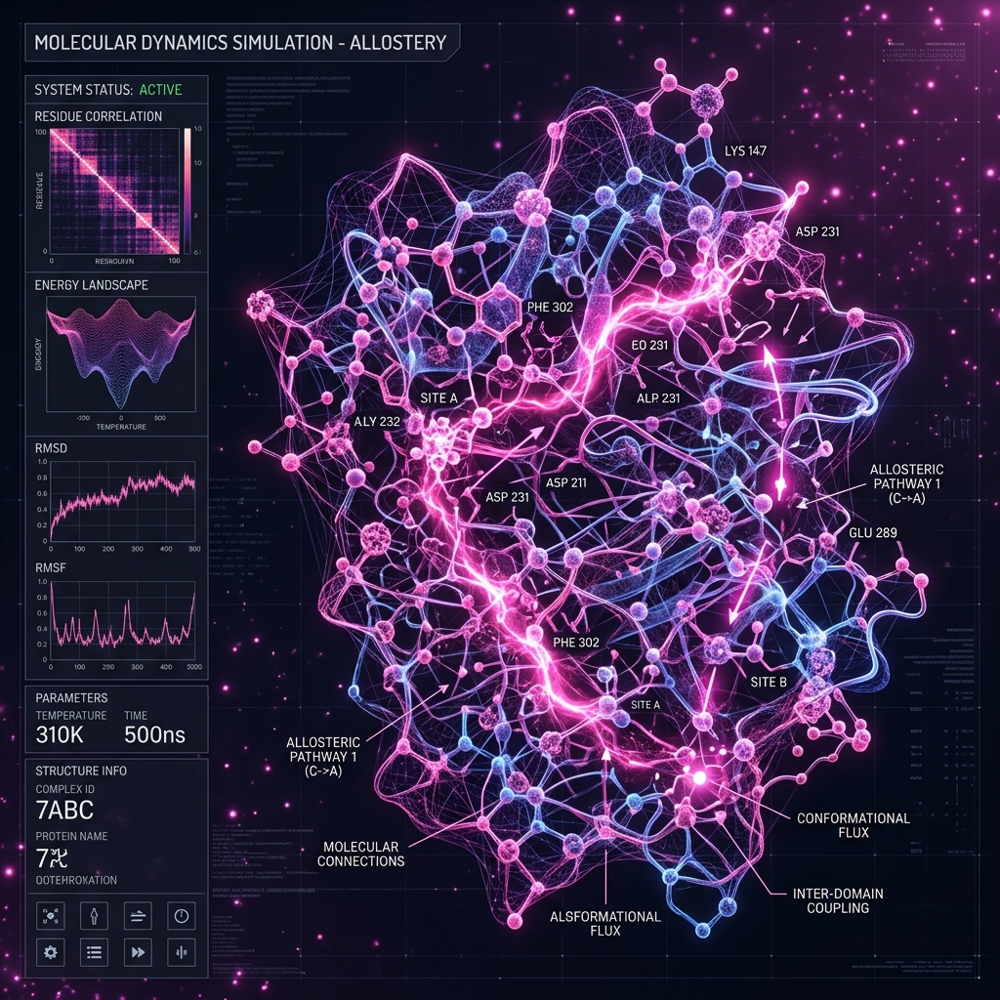
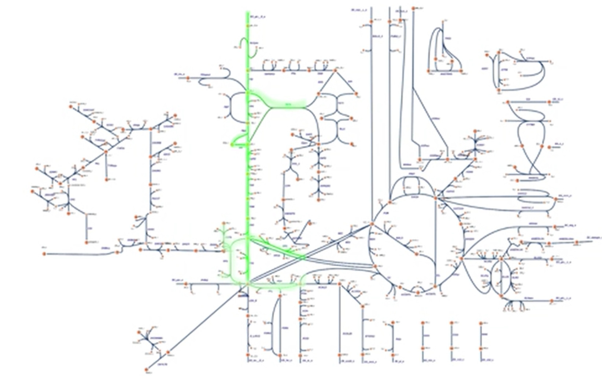
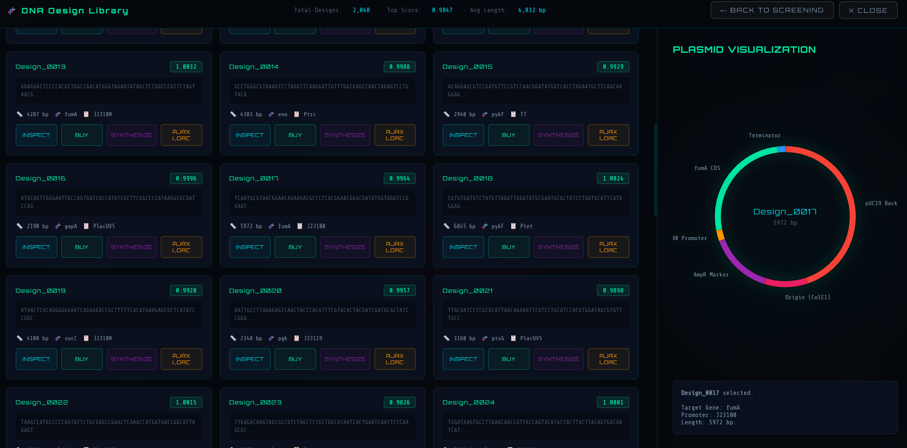

AjaxDNA Design Software turns trial-and-error biology into explainable engineering. We don't just automate the DBTL cycle—we dramatically reduce the number of iterations you need by improving hypothesis quality and biological understanding.
Teams struggle to interpret exactly why strains fail. Unclear results lead to a lack of confidence in engineering decisions and internal misalignment.
Understand the biological system and formulate better hypotheses. Make engineering decisions you can defend scientifically and internally.
Slow and unpredictable DBTL cycles mean spending months building and testing variants only to hit an unexpected dead end and start over.
Design better experiments and hypotheses in silico. Spend less time on dead ends and more on productive, successful engineering.
Every extra iteration burns budget and delays milestones. Unreliable planning forces conservative investments and increases portfolio risk.
Turn unpredictable trial-and-error into a reproducible pipeline. Reduce cost and time per successful strain while capturing value earlier.
Each module is independently functional today. Together, they form the computational scaffolding of the world's first whole-cell and microbial community digital twin — capable of simulating every cellular life event: mutation, engineering, energy flow, compartmentalization, and information transfer between molecules.
State-of-the-art annotation pipelines that go beyond standard databases — resolving functional roles for genes left un-annotated by conventional tools. The foundation of every downstream module: a more complete genome means more predictive power at every subsequent step.
Standard annotation tools (NCBI, UniProt pipelines) consistently leave 30–40% of genes without functional assignment. These gaps propagate errors into every downstream model — metabolic, regulatory, and structural.
Automated functional assignment combining homology, domain architecture, and synteny analysis. Outputs feed directly into protein design and metabolic modeling — closing the annotation gap before design begins.
A multi-layered engine for designing proteins with specific catalytic, structural, or signaling properties — backed by proprietary databases of protein topology, motion, catalytic transition states, and catalytic arrays that no competitor can replicate.


Predict and engineer enzyme active sites with atomic precision. Transition state modeling enables rational catalyst design without random mutagenesis — dramatically narrowing the search space for novel enzymatic functions.


Design protein backbone geometry for stability, binding affinity, and expression efficiency. Backed by a proprietary database of protein structures, topologies, and conformational states built from curated experimental and computational sources.

Model and engineer long-range conformational changes — allosteric regulation, domain flexibility, and dynamic signaling pathways within proteins. Enables design of proteins that respond intelligently to cellular conditions.
From production goal to testable genetic construct — automatically. Design DNA sequences, plasmid-ready constructs, and full metabolic models for any organism. Run flux balance analysis to predict yield, growth, and pathway performance before a single experiment.

Whole-cell metabolic models auto-generated from genome data. Flux Balance Analysis predicts growth rate, production yield, and metabolic bottlenecks across strain variants, consortia, media conditions and time — before any wet-lab commitment.

Define a target molecule or phenotype, and the system designs the optimal genetic construct — codon-optimized, promoter-assigned, and plasmid-formatted for direct synthesis and transformation. Already deployed in industrial and academic contexts.
Our philosophy is simple: a digital twin must represent all cellular life events — not just metabolism, not just structure — but mutation, modification, engineering, energy compartmentalization, and the full information flow from gene to phenotype. With maximum biological accuracy at minimal computational cost.
ATP, NADH, proton gradients — the twin tracks energetic costs across every simulated pathway, reflecting what cells actually pay to produce a molecule.
Distinct cytoplasm, membrane, periplasm, and organelle environments — each with unique transport, pH, and enzymatic conditions that affect every reaction.
Signal propagation from metabolites to transcriptional regulators to protein conformation — the twin sees how one molecular event triggers another across the cell.
Extend the twin beyond single cells to entire consortia — model cross-feeding, competition, cooperation, and GMO behavior within mixed microbial populations.
Each operational module contributes a layer of biological resolution. As they converge, the prediction accuracy of the whole-cell twin approaches the fidelity needed for autonomous bioprocess design.
Our platform's prediction accuracy rests on two proprietary databases built from years of curated experimental and computational research — unavailable from any public source or commercial competitor.
A curated database of protein three-dimensional structures, topological classifications, and conformational motion profiles. Covers fold families, domain arrangements, and experimentally validated dynamic states — specifically enriched for industrially relevant enzyme classes and microbial proteins.
A proprietary collection of catalytic transition state geometries and catalytic residue arrays — the atomic-level fingerprints of how enzymes lower activation energy. Enables rational active-site redesign and novel catalyst engineering without dependence on random mutagenesis libraries.
Every competitor uses the same public databases (PDB, UniProt, BRENDA). AjaxDNA's proprietary databases mean our protein design predictions carry resolution unavailable to any other computational platform — a structural advantage that grows as the databases expand.
| Capability | Description | Status |
|---|---|---|
| Module 1 — Enhanced Genome Annotation | ||
| Automated Functional Annotation | Multi-method functional assignment for un-annotated genes using homology, domain, and synteny analysis | ✓ Available |
| Relevant Gene Detection | AI-driven identification of key genes and regulatory elements for a target phenotype or production goal | ✓ Available |
| Module 2 — Automated Protein Design | ||
| Active Centre & Transition State Design | Atomic-level enzyme active site engineering guided by proprietary catalytic transition state database | ✓ Available |
| Protein Shape & Topology Design | Backbone and fold design for stability, expression, and binding — informed by proprietary structure database | ✓ Available |
| Allosteric & Mobility Design | Conformational dynamics and long-range allosteric pathway engineering | ✓ Available |
| De Novo Protein Generation | Design proteins without natural homologs — novel folds and catalytic activities from scratch | ↗ Upon Request |
| Module 3 — Automated DNA Design & Metabolic Modeling | ||
| Automated DNA Design (molecule production) | From production target to optimized genetic construct — codon optimized, promoter assigned, plasmid-ready | ✓ Available |
| Plasmid-Ready Constructs | Output formatted for immediate cloning and transformation — directly testable in host organisms | ✓ Available |
| Metabolic Modeling & FBA | Whole-cell metabolic model generation from genome data; flux balance analysis for yield and growth prediction | ✓ Available |
| Microbial Consortia Modeling | Multi-organism community simulations — predict cross-feeding, stability, and productivity of mixed microbial populations | ⚡ In Progress |
| DNA Shop — Synthesis Integration | Order designed constructs directly from the platform through integrated synthesis provider partnerships | ↗ Upon Request |
| Transformation & Cloning Service | End-to-end service from plasmid blueprint to validated strain — handled by our scientific team | ↗ Upon Request |
Our scientific team will walk you through a live demonstration using your organism, your target, or your dataset. Whether you're optimising a fermentation process, designing a therapeutic protein, or evaluating a cell factory — contact us to find out what AjaxDNA can predict before your next experiment.